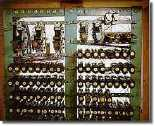
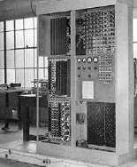
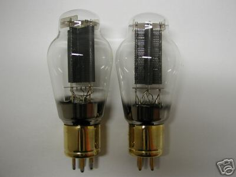
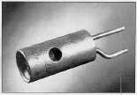
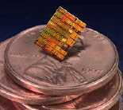
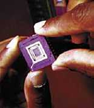
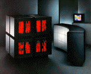
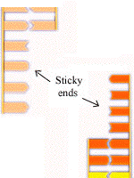
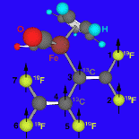

A calculating device that can follow detailed instructions.
Note that this definition does not restrict computers to the digital devices we use these days. Computers weren't always digital, and they may not be digital in the future.
To use a computer one needs a way to represent data (such as numbers, letters, and/or other symbols), operations (such as addition and multiplication to manipulate data), and instructions (to describe a sequence of operations).
Of course, modern computers manipulate other objects such as images, movies, animations, sound, too. We'll be looking at these later in the course.
People have used a variety of materials over the years for these representations. In a sense, the history of computing is a history of representations.
| Numbers | Operations | Instructions | Computer | Inventor (Year) |
|---|---|---|---|---|
| beads | addition: moving beads | N/A |
abacus
|
Chinese, Sumerians (5000 BCE) |
| dials | addition: rotating dials | N/A |
pascaline
|
Blaise Pascal (1642) |
| gears | addition, multiplication: stepped drum | N/A |
multiplier
|
G.W. von Leibniz (1694) |
| gears, punched cards | all arithmetic operations: gears on cylinder | decision making ("if-then"): mill |
Analytic Engine
|
Charles Babbage, inventor; Lady Ada Lovelace, programmer; (abandoned in 1842) |
| metal bars in glass, punched film | electricity | electro-mechanical | Z1-Z4  | Conrad Zuse (1938) |
| vacuum tubes | all arithmetic operations: switches | complete set of control instructions: magnetic drums | EDVAC  | John von Neumann (1945) |
This is only a partial history of computing devices. The emphasis here is on innovative representations, not in a complete set of computing devices developed over the years. For a more complete history of computing devices, you should check the PBS documentary. There is a more detailed set of slides on history of computing devices that you can access from the IEEE Computer Society.
In recent years, the emphasis has been on concise packaging. Not much innovation on representation. Small is fast, but smaller is faster. The size of the computer was directly related to the size of its smallest component and can be described in four computer generations:
|
1st Generation |
1945-1956 |
 |
vacuum tube |
|
2nd Generation |
1956-1963 |
 |
transistor |
|
3rd Generation |
1964-1971 |
 |
integrated circuits |
|
4th Generation |
1972-today |
 |
Very Large Scale Integrated (VLSI) circuits |
What will the Future 5th Generation look like?
One thing is certain, that there is a human desire for the highest computational power possible. But it is not clear today how faster machines will be developped. We understand that we cannot keep on creating faster uni-processor computers. We need some kind of multi-processor computers. Today, you can buy a computer with two or four processors that work in parallel.
What will the future's massively parallel computers be like? Will they be...
|
Electrical Containing Millions of Interconnected 4th Generation computers? |
 |
|---|---|
|
Molecular Composed on millions of programmable DNA strands in plastic tubes? |
 |
|
Quantum Composed of millions of charged atoms in nanotubes? |
 |
We do not know yet. Maybe all of the above. Maybe something more exotic. In any case we expect it to be at least as surprising and exciting it has been so far.
It has all been a matter of representation. That was the real innovation throughout time.
Technological innovation is our ability to match seemingly unrelated objects and ideas in order to produce something better. We will see that again and again in this course.
Computer Science 110
Date Created: September 2003
Date Modified: Summer 2005